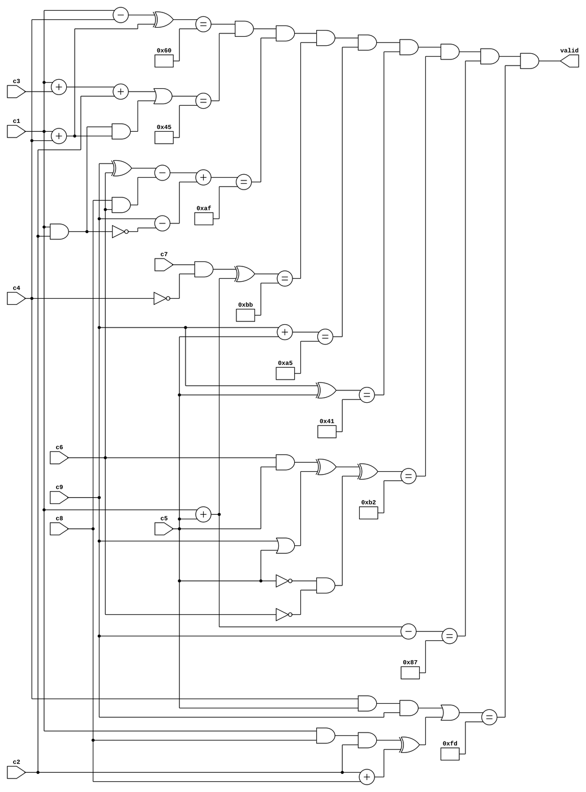

triage, what is this circuit even doing
phase / reconI open the challenge. The brief says: a hardware authentication module, no software involved, the verification logic is a combinational circuit on an FPGA, agents recovered a gate-level schematic during field operations. There's a target MD5: 47797f54b0f9f4b5b46463e7f86655d5. The flag format is omniCTF{sha256(password)}.
So the deliverable is a 9-byte password, with the MD5 as an integrity check. A hardware diagram that checks a password sounds intimidating until I look at the image. It's just a network of AND/OR/NOT gates with a few adders and subtractors, all combining into equality comparators whose outputs feed one long AND chain that drives a single valid bit. The whole point of a hardware password checker is: the password is never stored anywhere. You prove you know it by making the circuit output 1.
The schematic, in a nutshell, has 9 inputs on the left (c1..c9), 9 vertical expression columns in the middle, and 9 equality comparators in the right column, each with an 8-bit constant in a small box. The comparators' outputs are merged by a long horizontal AND reduction chain (8 AND gates in a staircase pattern across the top, since 9 boolean signals fold into 1), and the final output is the valid pin. About 18 AND gates total, 8 or 9 OR gates, 3 or 4 NOT gates, 7 adders, 4 subtractors. Combinational, no flip-flops, no clock, no state.
The thing about combinational logic is that there is no hidden state. The circuit is a function of its inputs. So if I can read every wire and turn it into a constraint, the problem becomes "find the 9 input bytes that make all 9 constraints hold at the same time."
I almost dove in and started enumerating 256^9 candidates in a single nested loop. That would have taken literal years on a single CPU, and even at the speed of modern hardware it's not the right shape for this problem. The constraints have structure, and the right move is to read that structure and exploit it, not throw brute force at the whole space. The original PDF author calls this out: the search order matters, and the cheap two-variable filters are the key to making it tractable.
the schematic, what every wire means
phase / transcriptionHere is the recovered gate-level schematic. The layout reads left to right: 9 single-byte inputs on the left, 9 expression columns in the middle, 9 equality comparators in the right column with their 8-bit constants in little boxes, and a single valid output at the top right driven by a long AND reduction chain.

Figure 1. The recovered gate-level schematic. 7 adders, 4 subtractors, ~18 ANDs, ~8 ORs, ~4 NOTs, 9 equality comparators, 8-AND reduction chain, single valid output.
What I do with it is read each wire as an expression over the input bytes. The model is simple: every operation is on a single byte, arithmetic wraps modulo 256, and bitwise NOT is masked back with & 0xff so the byte width stays consistent. The vocabulary of the diagram is just add, subtract, AND, OR, NOT, and equality. Anything more would be over-engineering.
constraints, transcribe every wire
phase / modelThis is the most error-prone part of the whole solve. Tracing every wire in the schematic and writing the corresponding expression in code is where most of the work goes. The brute force itself is just the last step. I keep the expressions close to the layout of the diagram instead of simplifying them too early, because every algebraic step I do by hand is a chance to introduce a bug.
The 9 constants, in the order they appear from top to bottom on the right side of the diagram, are: 0x60, 0x45, 0xaf, 0xbb, 0xa5, 0x41, 0xb2, 0x87, 0xfd. Each pairs with a 1-byte expression on the left of its comparator.
The 9 equations, transcribed directly from the schematic, in dependency order (cheap first, expensive last):
(c9 + c5) == 0xa5 // two-byte sum, cheap (c9 ^ c5) == 0x41 // two-byte XOR, cheap ((c1 + c5) - c9) == 0x87 // depends on c9, c5 and c1 ((c1 - c4) ^ (c1 + c4)) == 0x60 // c1 and c4 only (c7 & ~c4) ^ (c1 + c5) == 0xbb // derives possible c7 (c6 & c5) ^ (c9 | c5) ^ (~c5 & ~c6) == 0xb2 // derives possible c6 (((c4 & c5) & c9) | (((c1 & c8) & c2) ^ (c2 + c8)) == 0xfd // c2, c8, with c1, c4, c5, c9 known ((c9 ^ c6) - (c8 & c6)) + (c9 - ~(c1 & c2)) == 0xaf // depends on c2, c8 (c3 + c1 + c2) | ((c1 & c2) & (c1 + c4)) == 0x45 // c3, the last unknownNote the operations: + is addition modulo 256, - is subtraction modulo 256, & | ^ are bitwise AND/OR/XOR, ~x is bitwise NOT masked with 0xff, and == is one-byte equality. All 9 must pass at the same time.
There are 9 variables and 9 equations. The system is exactly determined in principle, but several of the equations involve 4 to 6 variables, so they don't reduce to a unique solution on their own. The cheap two-variable equations involving c5 and c9 collapse the search first, then the equations involving c1 and c4 cut the search again, and so on down to the expensive nested ones. The MD5 is the final arbiter if any ties remain.
pruning, why the order matters
phase / solverTwo equations involving c5 and c9 are the cheapest filters. They are both two-variable and they both apply to the same pair, so I solve them first and only keep (c5, c9) pairs that satisfy both. The number of (c5, c9) pairs in 256*256 is 65536, but the intersection of (c5+c9)==0xa5 and (c5^c9)==0x41 is tiny. In fact it leaves only 3 pairs. That is the kind of pruning the original writeup was hinting at.
From there I move to c1. The third equation, (c1+c5)-c9 == 0x87, depends on c1 plus the (c5, c9) pair. For each (c5, c9) pair I check which c1 values pass. For the surviving 3 (c5, c9) pairs, c1 also has only a handful of valid values.
Then c4. The fourth equation, (c1-c4) ^ (c1+c4) == 0x60, depends on c1 and c4 only. For each (c5, c9, c1) tuple I check which c4 values pass. The 0xbb equation also lives here: it constrains c7 in terms of c4 and (c1+c5), so I can build a list of possible c7 values for each c4. The 0xb2 equation does the same for c6 in terms of c5 and c9.
Now the c2, c8, c3 layer. The 0xfd equation involves c1, c2, c4, c5, c8, c9. The 0xaf equation involves c1, c2, c6, c8, c9. The 0x45 equation involves c1, c2, c3, c4. At this point, every variable except c3 is constrained to a small set of possibilities, and the inner loops are cheap. The total enumeration across all valid combinations is small enough that the MD5 check at the end runs in a fraction of a second.
The MD5 filter is the final arbiter. If more than one 9-byte candidate survives all 9 schematic constraints, MD5 picks the unique one. The challenge provides the target MD5 47797f54b0f9f4b5b46463e7f86655d5 as a hint that the password is the one input that hashes to it. Without that hint, the schematic might have multiple valid 9-byte inputs (the system is exactly constrained, not over-constrained, and bitwise equations can have multiple solutions). The MD5 is what disambiguates.
I almost iterated in the natural reading order: c1, c2, c3, c4, c5, c6, c7, c8, c9, with all 9 checks at the bottom. That would have meant 256^9 candidates enumerated in the worst case and probably a 30-minute runtime in the typical case. The right move is the one in the original writeup: solve the cheap two-variable filter first, build candidate lists for the variables it touches, then descend. The difference between "runs in 200ms" and "runs in hours" is the loop order, not the algorithm.
live sim, run the solver in your browser
phase / tool simBelow is the actual solver, ported to JavaScript and running entirely in your browser. Press RUN SOLVER and watch the search prune through the candidate space. The status bar at the top of the panel shows how many (c5, c9) pairs survive, how many c1 values, how many c4 values. The output panel logs each surviving candidate and its MD5 / SHA-256. When the password is recovered, it gets printed with the final flag.
The default MD5 in the input field is the target from the challenge description. You can edit it and re-run, which turns the sim into a "what happens if I pick the wrong target" toy. The solver still runs the same brute force, but the MD5 filter rejects every candidate and you get no output.
signal map, the solve chain
phase / visualizationThis is the investigation laid out as nodes and edges. The schematic and the constraints on the left, the solver and the recovery on the right. Click any node to see the one-line summary and the in/out flow list. Hover to highlight its connections. trace full path lights up the whole chain in one shot. animate flow makes the dashed flow travel along the active edges. Nodes auto-size to their text and are draggable, with a reset layout button to restore the default.
Click any node in the diagram to see what it is, what flows into it, and what flows out. Click a flow chip below to jump to that node. Hover a node to highlight its connections.
recovered flag
phase / verifyThe recovered password is HWf0rL1f3. In l33t: "HW for life." A hardware joke that fits the FPGA theme. The password is literally the lifetime of the hardware authenticator. The MD5 47797f54b0f9f4b5b46463e7f86655d5 matches the supplied target. SHA-256 of the password gives 286fc732ff998a04c5660b517df3404b4de58292ae0b3002fd107ecb484f8d70, wrapped in the omniCTF{} format.
The schematic itself was the whole challenge. Once every wire is transcribed into a system of byte constraints, the brute force is a small loop, and the MD5 is the final disambiguator if any 9-byte candidates tie.
appendix: complete python solver
referenceThe reference Python solver, included for the record. The browser sim above is the same logic ported to JavaScript with the MD5 implemented inline (no external library). The Python uses hashlib directly. Both produce the same password and the same flag.